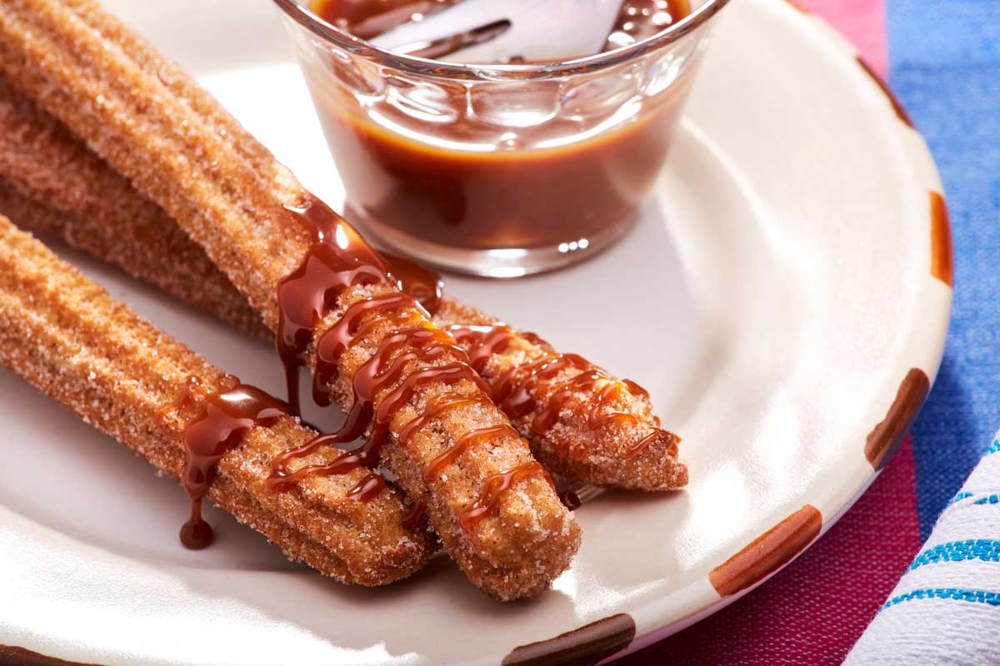

Churros with Cajeta

Description
These sweet lengths of fried dough are true delights, with a crunchy
sweet exterior and a soft, doughty interior. The cajeta is unlike
any other caramel, boasting rich, earthy flavors. It takes time to make
but is absolutely worth the effort.
Ingredients
Churros
- ½ cup sugar, plus 1½ tablespoons more
- 1½ teaspoons ground cinnamon
- 2 tablespoons vegetable oil, plus more for frying
- 1 cup water
- ½ teaspoon salt
- 1 cup all-purpose flour
Cajeta
- 1 quart goat milk
- 1 cup sugar
- 1 cinnamon stick
- ½ teaspoon salt
- 2 teaspoons vanilla extract
- ½ teaspoon baking soda
Steps
To make the Churros:
-
Combine the ½ cup sugar with the ground cinnamon in a shallow
bowl and set aside for coating the cooked churros.
-
Line a plate with paper towels and set near the stove. Pour the
vegetable oil into a medium sauce pan so it is at least 2 inches
deep. Begin heating the oil on medium heat to about 375°F.
-
Meanwhile, in a separate saucepan over medium heat, combine the
water, remaining sugar, salt, 2 tablespoons of vefetable oil, and
cook until the sugar has dissolved and the mixture is just about
to boil. Remove from heat and stir in the flour, mixing until smooth.
Transfer the warm dough into a piping bag fitted with a large star tip.
-
Whn the frying oil is hot, hold the piping bag over the pot and squeeze
out a length of the churro mix to about 4 inches long, and then snip it
off with scissors so it falls into the hot oil. Do this with several
churros at a time, frying for just a couple of minutes until they're golden
brown on all sides. Remove the cooked churros to the plate lined with paper
towerls to drain, and then roll them in the cinnamon sugar.
To make the Cajeta:
-
Combine the goat milk and sugar in a tall saucepot over medium-high heat.
Add the cinnamon stick, salt, and vanilla extract, and bring to a boil
while stirring regularly, which should take around 10 minutes.
-
Remove from heat and add the baking soda, which will cause the mixture
to rise and froth, but just keep stirring until it calms back down.
Return to medium heat and cook for around 1 hour, stirring occasionally,
until the whole mixture has thickened and turned a nice dark golden brown
color.
-
Remove the cinnamon stick and continue to cook for another 20 to 40 minutes
or so, stirring frequently to keep the bottom from burning. When the sauce
is thick enough for your liking—we suggest it be thick enough to coat
the back of a spoon—remove from heat and pour into a bowl for dipping.
The caramel can also be covered and chilled to thicken it a little further.